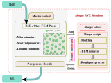

{kind=link}
First publication: July 24, 2023
Summary¶
This repo aims to do representative volume element (RVE) simulation via ABAQUS. It has two main parts:
- Part 1
Generate microstructure of RVE;
Configure material properties of RVE;
Configure loading conditions of RVE;
Encode all the information into a Json file as the input of ABAQUS;
Take the Pickle file generated by ABAQUS and perform further post-processing.
- Part 2
Read the Json file;
Run ABAQUS simulation;
Extract results from ABAQUS output file;
Encode results into a Pickle file.
The workflow of this repo is shown in the following figure.
{kind=link}
Statement of need¶
In order to use this repo, one needs first to know basics of ABAQUS secondary development, and basic under standing of design of experiment (DoE).
Community Support¶
If you find any issues, bugs or problems with this package. please contact to the maintainer.
License¶
Copyright 2023, Jiaxiang Yi
All rights reserved.
This project is licensed under the MIT License.